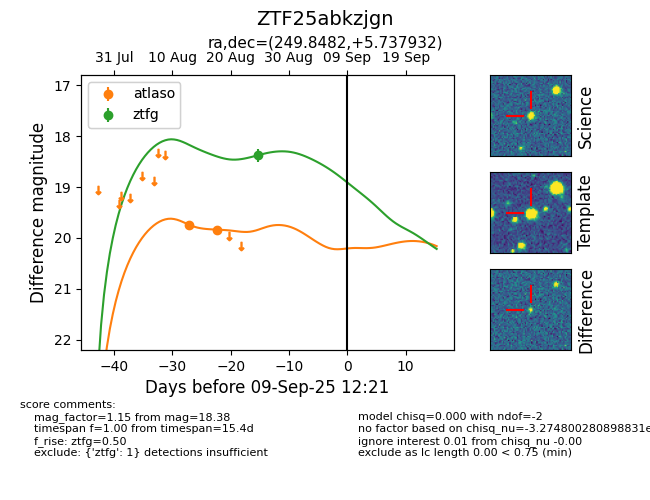

FINK: ZTF25abkzjgn
Lasair: ZTF25abkzjgn
ALeRCE: ZTF25abkzjgn
ZTF25abkzjgn (ztf,fink)
equatorial (ra, dec) = (249.8482,+5.73793)
galactic (l, b) = (22.1959,+31.87234)

last atlaso=19.84, ztfg=18.38
2 atlaso, 1 ztfg detections